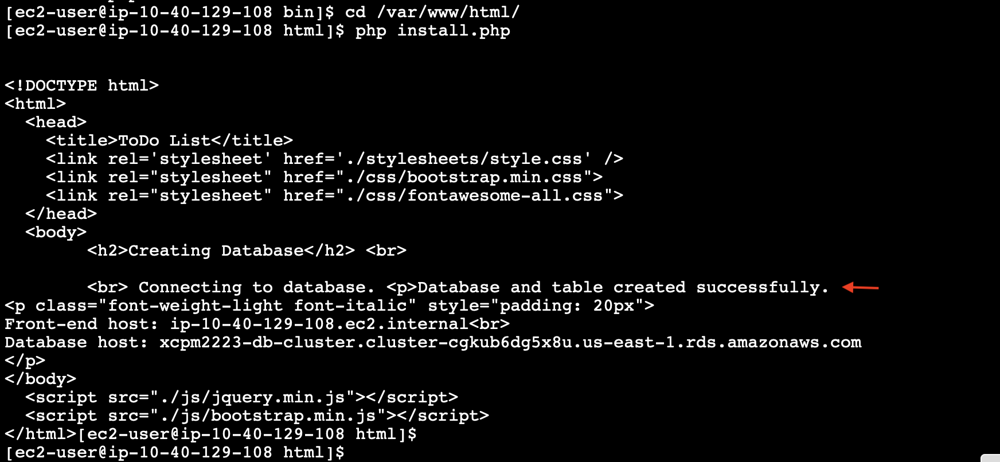

Paso 4: Configuración da aplicación
O seguinte paso vai ser a configuración da aplicación que usaremos na nosa arquitectura. En concreto, vamos facer o seguinte:
- Iniciar unha instância EC2 na que faremos a configuración da aplicación.
- Configurar o acceso á capa de datos desde a aplicación.
- Crear a BD que almacenará os datos da aplicación.
- Crear unha AMI a partir da instancia configurada.
Inicia unha instancia EC2
Desde a consola do servizo EC2, inicia unha instancia coa configuración seguinte:
- Nome: dalle un nome precedido do teu prefixo e curso, p.ex. xcpm2223-app-server
- AMI: Amazon Linux 2023
- Tipo de instancia: t2.micro
- Par de chaves: escolle a opción de continuar sen un par de chaves. Vamos usar o System Session Manager para conectarnos á instancia.
- Rede: escolle a VPC que creaches para a arquitectura, unha das subredes privadas que se crearon para a capa de aplicación e o grupo de seguridade da capa de aplicación.
- Detalles avanzados: escolle o perfil de instancia IAM LabInstanceProfile, que xa está predefinido no laboratorio de AWS Academy.
Nota
Se se che pregunta pola creación dun par de chaves durante o lanzamento da instancia, escolle a opción de continuar sen crear ningún.
Imaxe: propiedades da instancia EC2.
Conectate á instancia
Para conectarte á instancia usando o System Session Manager fai o seguinte:
- Coa instancia seleccionada na consola de EC2, escolle a opción Conectar.
-
No asistente cos métodos de conexión, escolle a lapela do Administrador de Sesións e preme no botón Conectar. Abrirase no teu navegador un terminal cunha sesión SSH na instancia.
Imaxe: conexión á instancia EC2.
Nota
Se aparece unha mensaxe dicindo que non é posíbel realizar a conexión, revisa que a instancia teña asociado o rol IAM LabRole (é dicir, que escolleras o perfil de instancia IAM LabInstanceProfile ao iniciala) e que o seu tráfico estea sendo encamiñado para os gateways NAT (é dicir, que a iniciaras nunha das subredes privadas da capa de aplicación).
-
O usuario co que se inicia a sesión é ssm-user por defecto. Aínda que poderiamos facer a configuración desde esta conta, vamos configurar a aplicación desde a do usuario ec2-user.
sudo -iu ec2-user
- Comproba que teñas conexión a Internet a través dos gateways NAT facendo ping, por exemplo, aos servidores DNS do Google.
ping 8.8.8.8
Nota
Se non houbera conexión, revisa que na configuración das táboas de roteamento asociadas á subrede na que lanzaches a instancia, o tráfico estea sendo encamiñado cara ao gateway NAT.
Comproba a conexión coa BD
- Instala o cliente MySQL.
sudo dnf update -y
wget https://dev.mysql.com/get/mysql80-community-release-el9-5.noarch.rpm
sudo dnf install mysql80-community-release-el9-5.noarch.rpm
sudo dnf install -y mysql-community-client
- Conéctate ao cluster de BD Aurora. Usa o endpoint da instancia de escritura que copiaches ao configurar o cluster e o contrasinal que configuraras para o usuario admin.
mysql -h <endpoint_da_instancia_de_escritura> -u admin -p
Nota
Se non consigues conectar, revisa o endpoint, o contrasinal, que a instancia estea nunha subrede privada da capa de aplicación e teña asignado o grupo de seguridade desa capa, que a BD teña asignado o grupo de seguridade da capa de datos e que o grupo de seguridade da capa de datos estea correctamente configurado.
- Comproba as BD que hai. Fíxate en que non hai ningunha chamada tasks.
SHOW DATABASES;
- Pecha a conexión co comando
exit.
Configura a aplicación
- Instala Apache, git, PHP e as extensións PHP para MySQL.
sudo dnf install -y httpd git php php-pdo php-mysqli
- Descarga a aplicación.
sudo git clone https://github.com/gei-eii/todo-php /var/www/html/
- Crea un directorio para a configuración e move o ficheiro de configuración dentro del.
sudo mkdir /var/www/configs && \
sudo mv /var/www/html/config.php /var/www/configs/
- Cambia o propietario ao usuario apache, que é o que se usa para executar o servidor web.
sudo chown -R apache:apache /var/www/configs
- Edita o ficheiro
/var/www/configs/config.phpcos datos seguintes:- host: o endpoint da instancia de escritura que copiaches ao configurar o cluster de BD Aurora.
- username: admin
- password: o contrasinal que configuraras para o usuario admin ao crear o cluster de BD Aurora.
Importante
Isto non é considerado como unha boa práctica. AWS recomenda usar o servizo Secrets Manager para gardar esta información de maneira segura. Facémolo así por simplificar a práctica.
- Activa e inicia Apache.
sudo systemctl enable --now httpd
- Accede á páxina principal. Se a configuración se fixo correctamente, devolverá a páxina principal da aplicación precedida dun erro indicando que non se atopou a BD tasks.
curl localhost
Crea a BD
- Crea a BD da aplicación executando o script
install.php.
cd /var/www/html/ && \
php install.php
 Imaxe: saída do comando que crea a BD.
-
Conéctate de novo ao cluster de BD Aurora e comproba co comando
SHOW DATABASES;que agora hai unha nova BD chamada tasks. -
Repite o acceso á páxina. Agora, como parte da saída, amósase o DNS privado da instancia e o endpoint do cluster de BD
curl localhost | grep host
Imaxe: saída do comando curl.
Crea a AMI
Vamos crear unha AMI da instáncia de aplicación que acabamos de configurar para usala posteriormente cando configuremos o balanceador de carga e o grupo de autoescalamento na capa de aplicación.
-
No menú de accións da instancia, submenú Imaxes e modelos, escolle a opción Crear imaxe para crear unha AMI coas opcións seguintes:
- Nome: dalle un nome precedido do teu prefixo e curso, p.ex. xcpm2223-app-ami
- Descrición: escribe unha descrición para a túa AMI.
Imaxe: AMI que contén a aplicación xa configurada.
-
Xa podes terminar a instancia EC2 que usaches para configurar a aplicación.